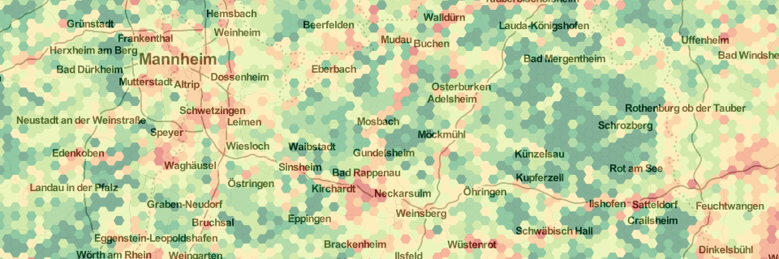
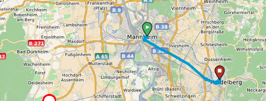
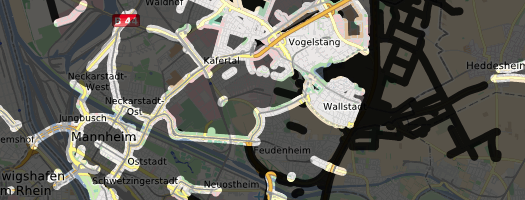
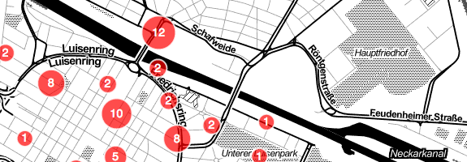

I'm a research assistant at Chair of GIScience at Heidelberg University. My research activities are focussed on crowd-sourced geographic information; especially quality, integration, and visualization of geographic data in social media.
A new interation of OSMatrix has been released today. The client applications has been re-design and implemented from groud-up leveraging latest technologies (HTML5 and CSS3) and open-source frameworks (Leaflet and D3). We further rebuilt server-side components using Node.js and its awesome ecosystem of extensions for processing stuff and Mapnik for rendering purposes. For a detailed description of new features read my post on GIScience Blog.
Review Paper: Location Based Social Networks — Definition, Current State of the Art and Research Agenda
An early view version of our review paper entitled Location Based Social Networks — Definition, Current State of the Art and Research Agenda has been published by Transactions in GIS. You may also download the final draft version free of charge.
Coding
OSMatrix—visualizing spatio-temporal characteristics of OpenStreetMap

OSMatrix visualizes characteristics of OpenStreetMap, which are usually not displayed in cartographic representations of the data. The characteristics include information on the topicality of data, user contributions and the presence (or absence) of certain feature types. These characteristics enforce understanding of data quality and activities in the community as well as their evolution over time.
OpenRouteService

OpenRouteService is an online route planning application that is solely based on open-source software, open standards and open data. I'm currently involved with the re-design and re-implemention of client-side components.
Lightmap

The Lightmap visualizes the world-wide distribution of street lamps as they are available in OpenStreetMap.
Where do you go? … And when?

As a result of some experiments I did with the Foursquare API, I implemented a litte web application that visualizes your Foursquare check-ins and allows to filter for venue categories, day or hour of check-in.
Writing
The final manuscripts of most of my publications are available for download from this site. Please keep in mind that these manuscript versions may slightly vary from the published ones.
Roick, O.; Kralisch S. & Flügel, W.-A. (2010): Design and implementation of a mobile client for the River Basin Information System (RBIS). In: Zipf, A; Behncke,K.; Hillen, F.; Schaefermeyer, J. (Eds.): Geoinformatik 2010 "Die Welt im Netz", 239-240. Akademische Verlagsgesellschaft, Heidelberg.
Conference and Workshop Abstracts and Short Papers
Roick, O.; Vogel, A.; Busch, H. & Flügel, W.-A. (2008): Innovative Technologies and their Demonstration for Indoor Positioning. 5th International Symposium on Location Based Services and TeleCartography. Salzburg, November 2008.
Roick, O.; Gerlach, R. & Lemmens, R. (2008): Using Open Standards for Browser-based Integration and Visualization of Geo-Spatial Data. Geophysical Research Abstracts, Vol. 10(EGU2008-A-07829).
Teaching
Courses (in German only)
Geosoziale Netzwerke – Theorien, Konzepte und Modelle (Summer terms 2012 and 2013)
WebMapping – Grundlagen von WebGIS (Winter terms 2010/11, 2011/12 and 2012/13)
Supervised Theses
Heuser, S. (2011): Geodaten aus sozialen Netzwerken — Überblick und Nutzungspotentiale. B.Sc. Thesis. Chair of GIScience, Heidelberg University.